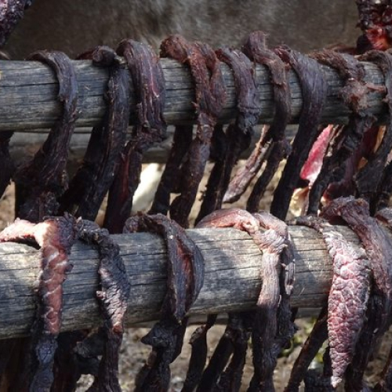
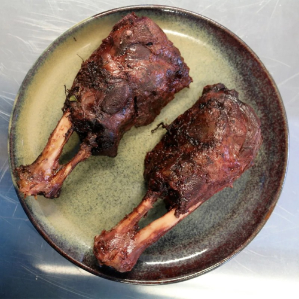

SignatureM
Arctic restaurant menu
-
- Uka (ukha)
- The "fishless" recipe for Arctic Ukha fish soup stems from its proximity to the Barents Sea, which is home to Arctic crabs. It is as easy for locals to catch fresh crabs as making bread. Crab is used to make broth with kelp, crabmeat, shrimp, scallops, and cloud berries (Arctic local berries that look like orange raspberries and taste like blackberries).
-
- a burger made of reindeer meat
- In the Arctic, deer or reindeer meat is often used in meat cooking, but some restaurants also use elk. Alexey Ermakov's reindeer burger is served on rye bread with roasted Arctic potatoes and lingonberries with reindeer horns and two sauces of mushrooms.
-
- a chip made of reindeer moss
- Reindeer mosses are mosses that grow extensively everywhere in northern Russia. It is commonly found in pine forests, swamps, and mountains.
-
- Cloud Berry&Fine Nut Cake
- Clearly the most delicious dessert in northern Russia, this cake offers the perfect combination of cloud berries and pine nuts, crisp meringue, and sponge cakes and cream. This is Svetlana Kozeiko's recipe. The recipe does not include the main decoration of the cake. Decorate as you please. The base rate is 1.3kg sponge cake for 20 servings.
-
- Mero steak
- There are many species of fish in the world, and according to Svetlana Kozeiko, the creator of the recipe, the most famous fish steak is called 'Mero. ' The variety caught in the Arctic and Barents seas is the mero.It has a delicious texture that is a little gelatinous and juicy. It is called a very rare and expensive delicacy in local restaurants.
-
- Deer cucumber bread
- Deer meat has long been a traditional dish in northern Russia. The cooking workshop "FriendChef" has revealed recipes for its appetizers made from deer meat for tourists. It's a combination of venison, cucumbers, and bread that goes well with it.
Arctic local food
-
Muktuk
-

bright reindeer meat
-
Buoyuren
-
a reindeer horn dish
-
Akutaq
-

a seal shin